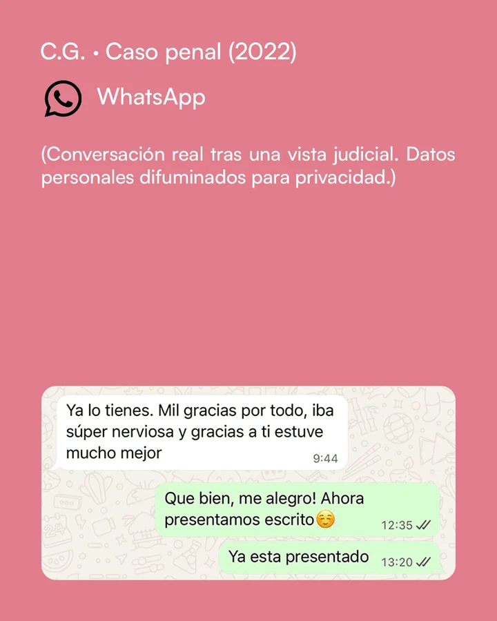
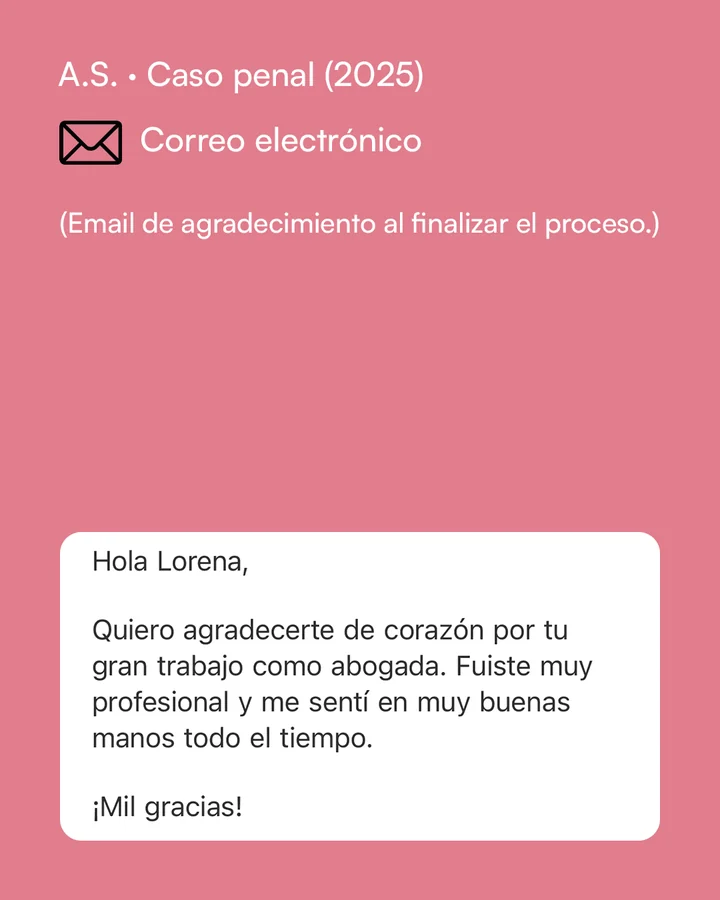

En qué puedo ayudarte.
Sea cual sea tu situación, hay un camino para representarte y entender lo que está ocurriendo. No importa si te acusan injustamente o has actuado de forma ilícita.
-
Delitos de naturaleza
sexual y violencia
de géneroCasos especialmente sensibles por razón de materia, en los que trabajo cada situación con respeto, análisis profundo y empatía, buscando que el proceso sea lo más humano y justo posible.
-
Defensa penal
en delitos
gravesHomicidios, asesinatos, delito de lesiones, delitos contra la salud pública. Mi prioridad es ofrecerte una defensa o acusación sólida y estratégica, centrada en los hechos reales y en tu historia personal.
-
Delitos
informáticosEstafas, suplantaciones de identidad o fraudes digitales. Te ayudo a demostrar los hechos o a intentar recuperar lo perdido, con una visión práctica de cómo funciona el entorno digital y sus pruebas.
-
Derecho
penitenciarioRepresento a internos en temas de permisos, progresiones de grado o sanciones disciplinarias. El objetivo siempre es el mismo: defender tus derechos y avanzar hacia una reinserción real.
Elige los 45 minutos
que te vayan mejor.
Y responde a las preguntas que encontrarás una vez seleccionado día y hora.
El calendario es de Calendly y se carga al pulsar el botón.
Quien soy.
Soy Lorena Ballesteros, abogada penalista en Barcelona desde 2017. Mi trabajo no consiste en prometer resultados, sino en ayudarte a entender tu situación legal y acompañarte con una estrategia real y humana. He llevado casos de delitos de agresión sexual, homicidios, violencia de género, lesiones, salud pública así como delitos informáticos, tanto en defensa como en acusación. También llevo casos de derecho penitenciario. Cada caso tiene una historia detrás, y para mí la justicia empieza por escuchar sin juzgar.
“Sea mejor o peor, siempre hay una forma de resolver tu situación.”
Puedes contarme tu caso sin miedo ni compromiso. Escucharé tu historia y te diré con claridad qué puedes hacer a partir de ahora.
Historias reales, no promesas.
Estos son algunos mensajes de agradecimiento recibidos de clientes. Los nombres y datos personales se han modificado para preservar la confidencialidad.


![A.C. · Absolución penal (2025). Correo electrónico. (Mensaje recibido por correo tras conocerse la sentencia absolutoria.) «En lo que a mí respecta, quiero decir que me siento muy satisfecho con la forma en la que has tratado mi caso. Y no solo por el resultado final de absolución que por supuesto me ha proporcionado una gran alegría y tranquilidad, sino por la manera en la que has llevado cada una de las fases del proceso, tanto los escritos como las actuaciones en sala. Creo que eres una gran profesional. Lo dicho anteriormente, muchas gracias por todo. Un saludo cordial»](assets/img/testimonio-3-correo.webp)
Preguntas frecuentes
¿Qué tipo de casos te gusta llevar y cuáles prefieres no aceptar?
En derecho penal, soy especialista en delitos de naturaleza sexual ( agresiones sexuales, agresiones sexuales a menores de 16 años, acoso sexual, exhibicionismo, prostitución de menores, pornografía…) homicidios y asesinatos. Tengo también experiencia en tráfico de drogas, robos con violencia, delitos informáticos, lesiones, violencia de género… También tengo experiencia en Tribunales del Jurado. También tengo experiencia en derecho penitenciario, en representación de los internos en cuestiones como clasificación penitenciaria, progresiones de grado, permisos de salida y recursos contra sanciones disciplinarias. Acepto todo tipo de casos. En laboral, solo acepto casos de despido y negociaciones con la empresa en representación del trabajador y/o viceversa.
¿Por qué deberías elegirme a mi y no a otro abogado?
Te voy a decir las cosas tal cual, no te voy a decir lo que quieres escuchar, no te voy a dar falsas expectativas, te voy a decir la realidad y en lo que me comprometo, es a poder asesorarte lo mejor posible dentro de esa realidad. Tengo que jugar con lo que tengo, y a veces lo que tengo o lo que trae el cliente no es suficiente o no es bueno para poder conseguir lo que quiere él, y entonces de lo que se trata es de conseguir el mejor acuerdo o la condena minima. Por otro lado, hablo francés nativo, ya que mi madre es francesa. Si te sientes más comodo/a hablando en francés, no habrá ningun problema.
¿Qué errores comete la gente antes de contratar a un abogado?
Pensar que por ser más mayor, va ser más comprometido. Pensar que por ser más caro, va a ser mejor. Pensar que por ser una mujer o un hombre, según el delito que sea, les va a beneficiar o no, eso quizás era antes, ahora ya no. Querer corroborar lo mismo con 5 abogados más. Escoger al que le asegura 100% un éxito o una buena resolución ( no se puede a no ser que sea algo evidentisimo).
¿Qué le dirías a alguien que tiene un problema legal, pero tiene miedo de pedir ayuda?
Sea mejor o peor, siempre hay una forma de resolver tu situación, me comprometo a asesorarte en ello.
¿Cuántos años llevas ejerciendo como abogada?
Desde el año 2017.
¿Dónde estás colegiada y en qué zonas trabajas habitualmente?
Estoy colegiada en el Ilustre Colegio de Abogados de Barcelona, trabajo en Barcelona Ciudad , y en Cataluña en general. También me desplazo a cualquier sitio de España si el procedimiento lo requiere.